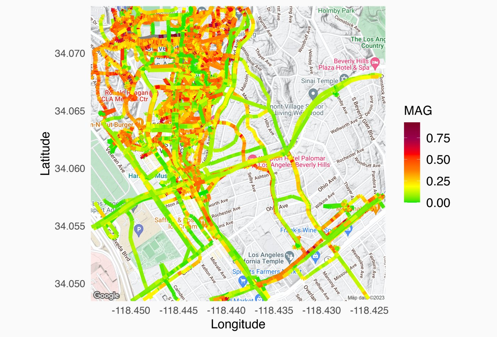
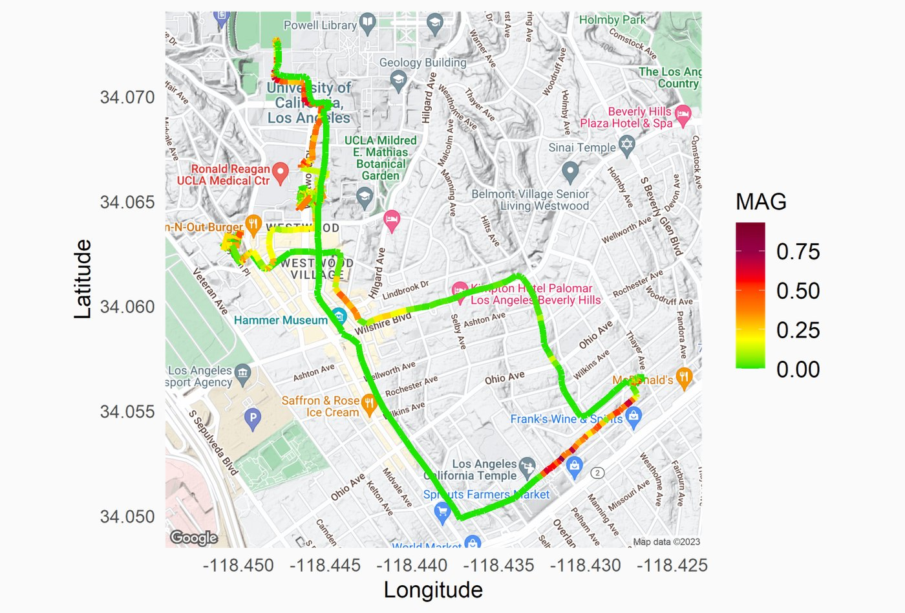
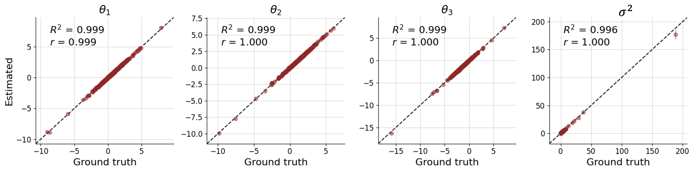
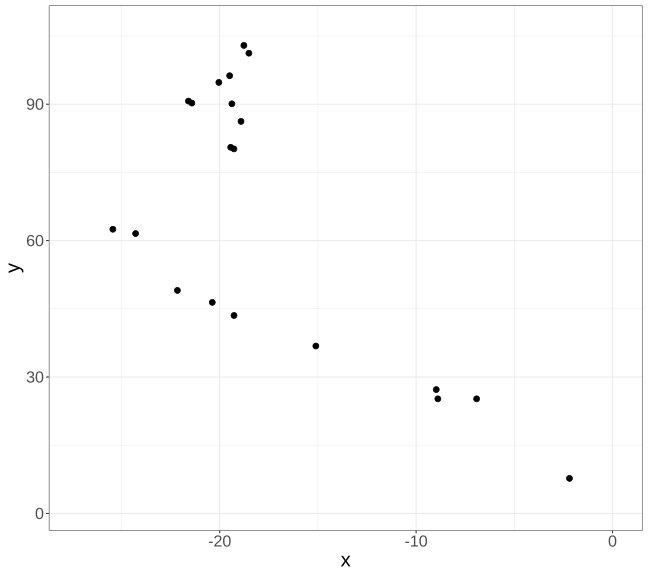
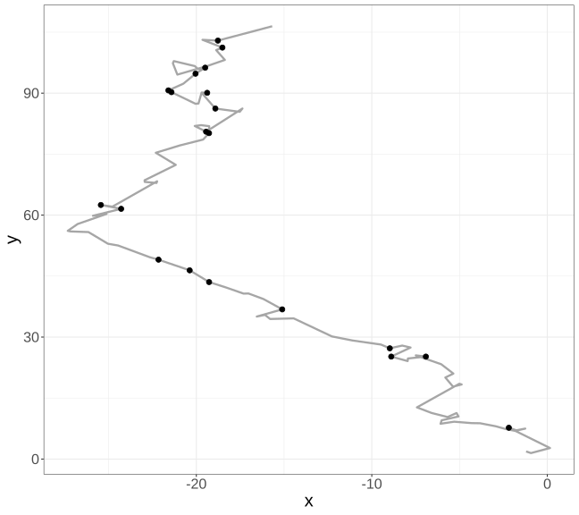
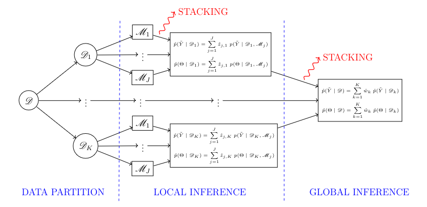
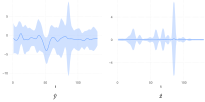

Carbs, Calories, and Computation: Serving Up Statistical Inference in the AI Ecosystem
Sudipto Banerjee
November 13th, 2026 @ UCSB
UCLA Department of Biostatistics,
UCLA Department of Statistics & Data Science,
UCLA Institute of the Environment & Sustainability,
University of California, Los Angeles.
Tonight’s Input Data: Macronutrient Breakdown
CarbohydratesProteinFat
Dietary Track
Total Calories
Carbohydrates
Protein Density
Non-Vegetarian Track(Tri-Tip / Chicken)
~1,520 kcal
145g (38%)
120g (32%)
Vegetarian Track(Enchiladas / Rice)
~1,340 kcal
180g (54%)
54g (16%)
Statistical Difference (Δ)
−180 kcal
+35g (+24% Carbs)
−66g Protein
Example of a subject’s movement

Trajectories from a subject over several days · Google Drive ↗
Accelerometers calculate \(a(t)\) over small time-intervals
Magnitude of acceleration or Euclidean Norm Minus One (ENMO):
\[ MAG_{accel} = \sqrt{a_x^2 + a_y^2 + a_z^2} - 1g, \]
where \(\{a_x, a_y, a_z\}\) are average readings along the three axes over small (e.g., 10-sec) time windows (epochs) and \(1g = 9.8\,m/s^2\) adjusts for earth’s gravity.
With \(MAG\) readings from hip and ankle (Mortazavi et al., 2013):
\[ \text{MET} = 5.289\cdot (MAG_{hip} + MAG_{ankle}) - 8.5548 \]
Activity intensity
MET range
MAG
Sedentary or light
\([0,\,3)\)
\([0,\,493)\)
Moderate
\([3,\,6)\)
\([493,\,1029)\)
Hard
\([6,\,9)\)
\([1029,\,1608)\)
Very hard
\([9,\,\infty)\)
\([1608,\,\infty)\)
Table: MAG activity count cut-points for different PA intensity levels
Artificially Intelligent Recommendation System
Human
Hi, I want you to analyze my metabolic activity levels over the last month. Here is my UCLA ID: XXXX.
Machine
Sure. I can help with that. Give me a moment as I look up your profile and collect the data from your accelerometer. Ok. I have completed my analysis. Your current metabolic activity level is “LIGHT”.
Human
Can you recommend a new routine for me to do my daily walks so that I can upgrade my metabolic activity level to “MODERATE”?
Machine
Ok. Let me predict your metabolism rates on 13 new trajectories that are close to your daily walking routes. YES! I am able to recommend a new trajectory from your home to your office that should yield a statistically significant increase in your metabolic levels.
Recommended trajectory

Recommended trajectory for a typical subject · Google Drive ↗
You are given a (deep) learning machine \(f_{\phi}(y; \mathcal{M})\):
\[ \hat{\theta}(y;\phi) = f_{\phi}(y; \mathcal{M})\;, \]
where \(\mathcal{M}\) is a Bayesian model, \(y\) is any realized data from \(\mathcal{M}\) and \(\hat{\theta}(y;\phi)\) is a neural estimator of our parameter of interest \(\theta\).
TensorFlow trained over \(\sim 10^6\) datasets simulated from \(p\left(\Theta_{1:T}, \Sigma, Y_{1:T}\right)\):

Figure: Quantile-quantile plot of posterior samples generated using Bayesian transfer learning plotted against the exact posterior samples using FFBS (ground truth) and a marginal variance parameter (diagonal element in \(\Sigma\)).
Realizations along trajectories—not regions


MAGs or METs over trajectories
Actigraph traces out a path (trajectory): \[ \Gamma = \{\gamma(t) : t \in \mathcal{T}\}. \]
Let \(\gamma(t): \mathbb{R}^{+} \to \mathbb{R}^d\) be the position vectors with “parameter” \(t\).
Let \(i = 1, 2, \ldots\) index recordings from (subject, day) pairs.
Measurements \(Y_i(\gamma(t), t)\): \(MAG\) at position \((\gamma(t), t)\).
\[ Y_i(\Gamma, \mathcal{T}) = \{Y_i(\gamma(t), t) : t \in \mathcal{T}\} \]
Spatial-temporal modeling
For subject \(i\), posit the following model for arbitrary trajectories:
\[ Y_i(\gamma(t),t) = \mu_i(\gamma(t),t; \beta) + w_i(\gamma(t),t) + \epsilon_i(\gamma(t); t);\; \epsilon_{i}(\gamma(t), t) \overset{ind}{\sim} N(0,\tau^2_i). \]
Instead of positive-definite functions with geodesic distances:
\[ w(\gamma(t),t) = \int_{u\in \mathcal{T}} \exp\left(-\frac{d(\gamma(t),\gamma(u))}{\phi}\right)Z(u)\,du\;, \]
where \(d(\gamma(t),\gamma(u))\) is the geodesic metric between points.
Spectral graph theory using proximity matrices (finite set):
\[ W = \left(K_{\theta}\left(d(t_i, t_j)\right)\right)_{1\leq i,j \leq n};\quad A = D^{-1/2}WD^{-1/2}\;, \]
where \(D = \texttt{diag}(W)\) (diagonal matrix with \(w_{ii}\)’s)
\[ \text{Laplacian: }\; D - \rho W = D^{1/2}(I - \rho A)D^{1/2}\;. \]
Positive-definiteness of Laplacian is easily ensured by \(\rho \in (1/\lambda_{\min}, 1)\).
Bayesian predictive stacking for amortized (neural) inference
Separate model parameters \(\theta = \{\beta, w(\cdot), \phi\}\). Posterior inference:
\[ p(\beta, w(\cdot) \given y) = \mathbb{E}_{\phi \given y}[p(\beta, w(\cdot) \given y, \phi)] \approx \sum_{g=1}^G a_g\, p(\beta, w(\cdot) \given y, \phi_{g}) \]
Very often \(p_g(\beta, w \given y, \phi)\) is available analytically:
\[ p_g\left(\beta, w,\sigma^2 \given y, \phi_g \right) = IG\left(\sigma^2 \given a_{\sigma}^*, b_{\sigma}^*\right)\times N\left(\beta, w \given M m, \sigma^2 M\right)\;, \]
Stacked posterior is evaluated using weighted combination of \(\mathcal{M}_g\)’s:
\[ p(\cdot \given \mathcal{D}) = \sum_{g=1}^G \hat{a}_g\, p_g(\cdot \given \mathcal{D})\;, \]
Federated transfer learning: Double predictive stacking
Double Predictive Stacking

Model comparisons
Model 1: \(w(\gamma(t),t) \sim GP(0, C_{\theta}(\cdot,\cdot))\) non-separable \(C_{\theta}\).
Model 2: \(w(\gamma(t),t) = \omega(t) + f(\gamma(t))\).
Model 3: Kernel-convolution with geodesic distances.
Model 4: Spectral graph specification with geodesic proximities
Table presents % difference in scores from Model 2
Model choice score
Model 3
Model 4
Model 1
Posterior predictive loss (G&G, 1998)
5%
7%
10%
DIC
5%
5%
11%
WAIC
3%
5%
11%
RMSPE
3%
6%
9%
Physical activity profiles of individuals

Figure: Left: Posterior predictive bands of \(y\) obtained by continuous time trajectory model. Right: Posterior predictive bands of \(z\) obtained by continuous time trajectory model.